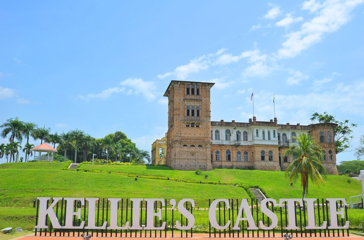 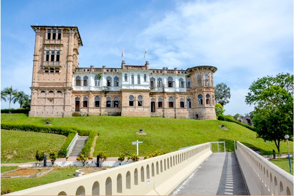 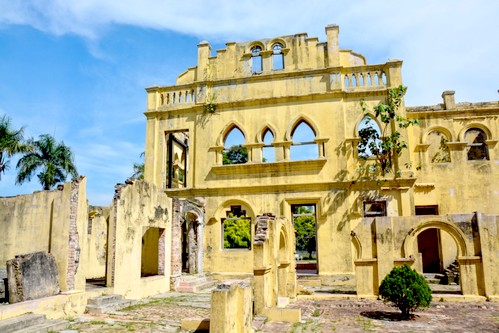 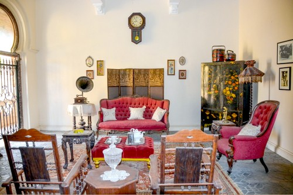
在馬來西亞怡保的市郊有一座未完成的凱麗斯古堡，於1915年開始興建，其名稱是由英國人威廉史密以其母親名字命名。 通往城堡的石橋，其地形猶如迷宮一般，散發一股獨特的神祕色彩。 凱麗斯古堡是一棟歐式建築，共有6層樓，建築物的設施包括升降機丶地下酒窖及避難室、1樓至4樓擁有多間寬敞的房間。摩爾式的建築結構，筆直砌磚、精雕的窗門，散發些許雍容華貴。 漫步在悠長挑高的廊道、殘破的牌樓，在暖暖陽光下顯得格外有情調。 走入中央廳堂，還能看見完整遺留的家具，紅色絨布沙發、留聲器，仿佛還能感受到威廉史密與妻子輕舞的浪漫氛圍。如今，已成為新人最愛拍攝婚紗的絕佳場景。
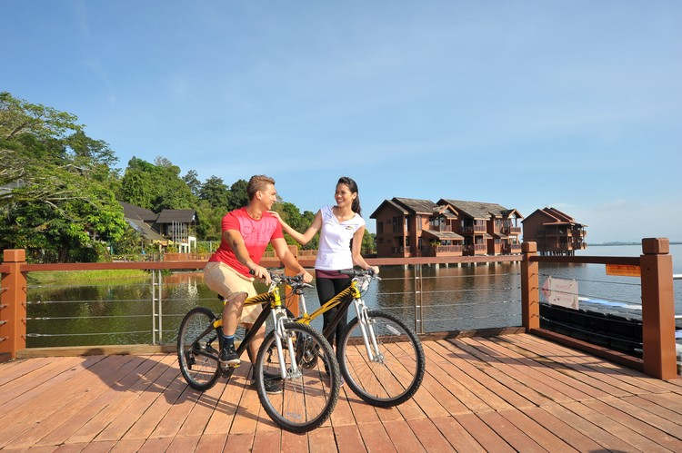 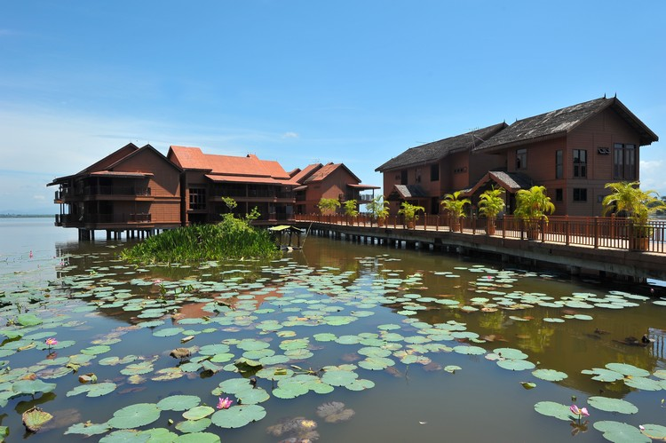
霹靂州的旅遊景點之一, 是位於北部的第一個水上主題樂園，湖鎮水上樂園。這座水上樂園是600公頃的湖上渡假鎮的部份建設。 它為全家人提供了各式各樣的水上活動及遊樂設施。從檳威大橋開車到此只是35分鐘的路程，從怡保出發則約需一個小時車程。
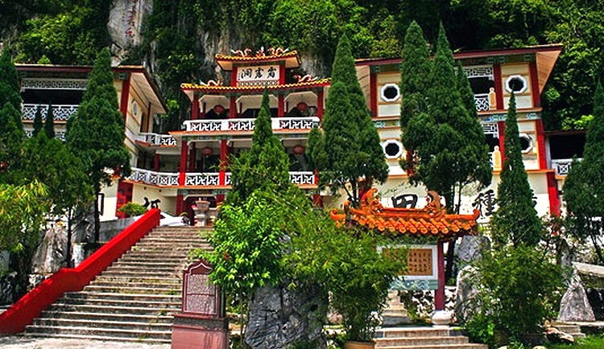
在怡保北部6公里處，靠近TASEK山的地方，有許多大型的石灰岩山洞，這裡常是佛教出家人進行冥想修行的場所。 霹靂洞廟宇是其中之一，它被建造在洞窟的深處，再洞穴的角落安放著一些佛的雕像及在各隱蔽處畫有佛的圖案等。 其中最吸引旅客的地方當數12.8公尺高的一尊坐佛。這裡有一條通道，直通洞穴深處，再攀爬過一個擁有385級的陡峭樓階梯後，眼前有一個突出的空地，可以瞭望鄉村景色。
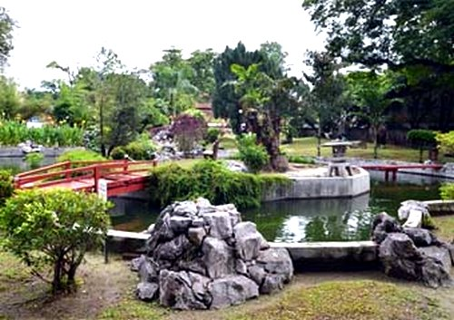 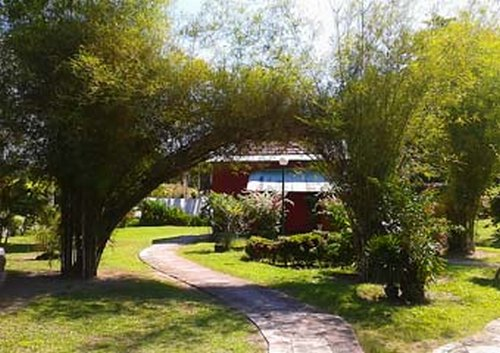 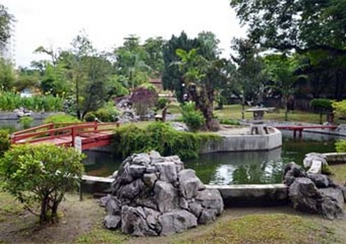 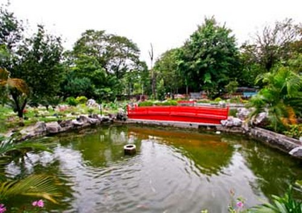
位於怡保的霹靂跑馬場俱樂部附近，這座公共公園重朔了日本式花園的美感。花園裡包含了金魚池、木橋及ㄧ間日本小屋，嘗試營造ㄧ個傳統日本庭園的幽靜氣氛。 草地上則種有熱帶的花草植物及樹木等。在一個小斜坡上，還特意安放了一個富有色彩的花鐘，可以準確的報時。
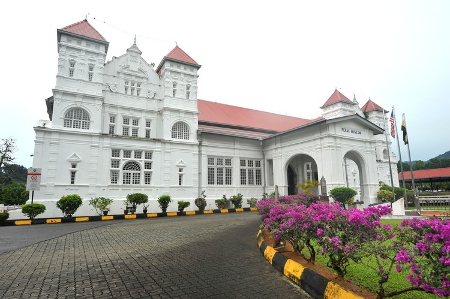 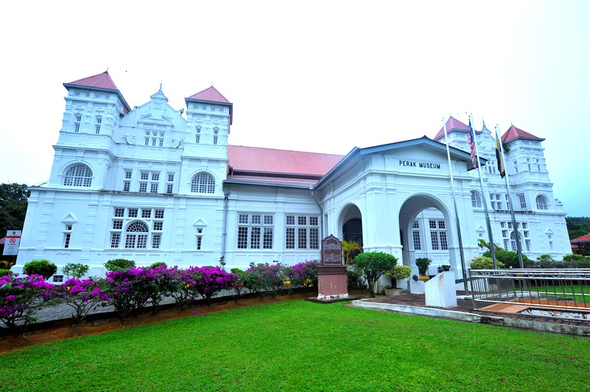 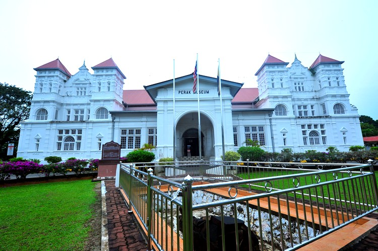
霹靂博物館座落在博物館路，建於1883年。這座馬來西亞最古老的博物館，展示了動物學、史前、經濟及人神學上的相關資料。 它擁有很珍貴的考古上的寶藏，如:古代武器、原住民的各類器具及裝飾物品等。這些皆顯示了霹靂州豐富的歷史遺產。
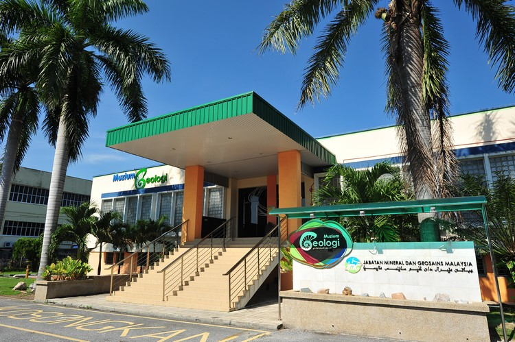
位於蘇丹阿茲蘭沙路的地質博物館，建立於1957年。這裡收藏有許多令人印象深刻的礦物質、化石、珍貴的寶石及各種各類石頭的樣品。 它一共收藏有超過600種的礦物樣本，全部按照其化學成份及構造來分類。館內所展示的錫礦時最為人稱道，它擁有世界上品質最好的錫石樣本。
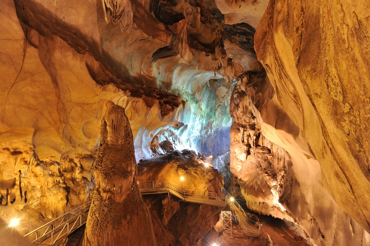 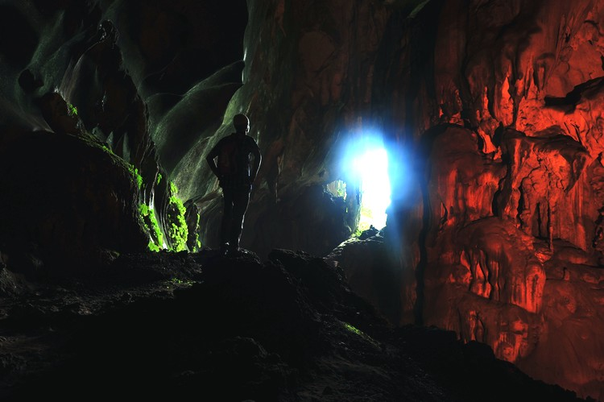 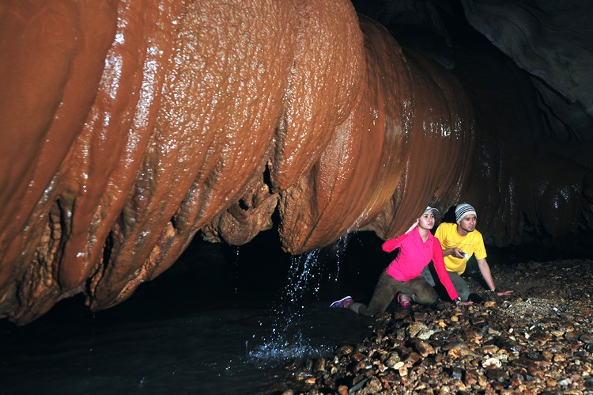
座落在距離怡保24公里處這些古老的岩洞從和豐〈SUNGAI SIPUT〉延伸一公里長的路程直到美棚〈KUALA DIPANG〉。 椰殼洞是由五個圓頂所組成，有著形如椰殼般的天花板，並交錯著各種各樣的鐘乳石和石筍。岩洞的入口處位於務邊，此處設有一旅客服務中心，遊客出發前往岩洞之前必須先在此處登記。
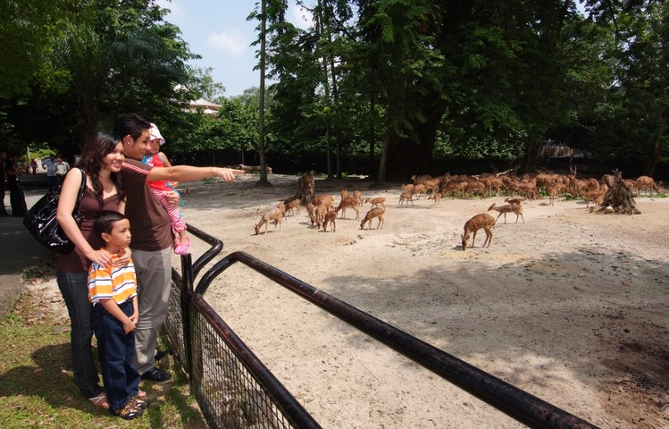
距離怡保82公里處、安順40公理處的宋溪擁有一座宋溪鹿園，園中有超過一百隻麋鹿自由地在一處保留與繁殖區活動。
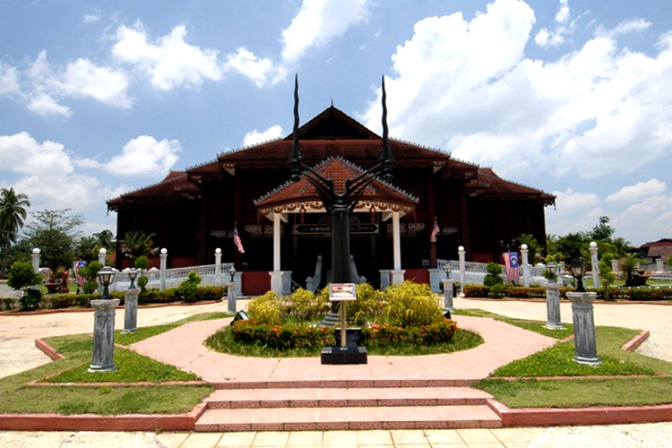
 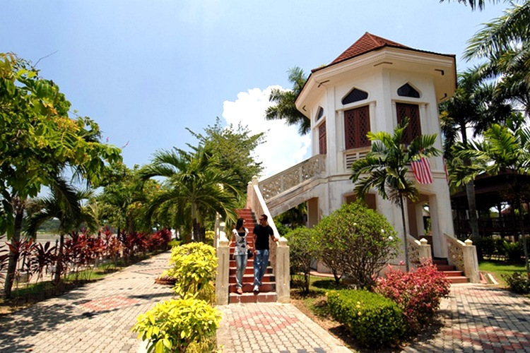
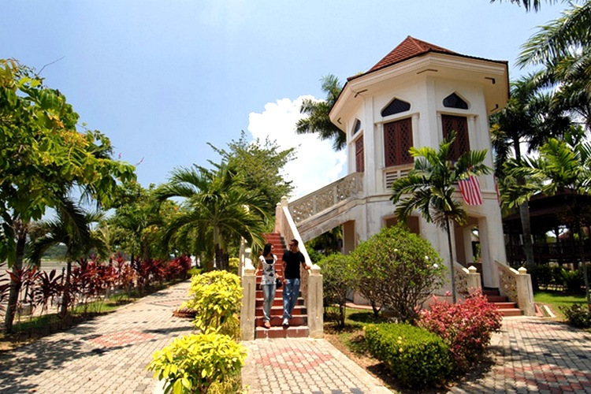
座落在距離怡保70公里處，巴西沙列歷史博物館在馬來西亞歷史的發展上佔據著非常重要的地位。 此處是馬來民族主義的發源地，爭取民族自由及國家獨立的火花就是由這裡開始。當時的霹靂領事JWW BIRCH在遭到暗殺之後，遂爆發了英國殖民政府和馬來族群的戰爭。 這座巴西沙列歷史博物館是為紀念拿督MAHARAJA LELA、拿督SAGOR及PUNTUN先生等英勇民族鬥士而設的。 後人為每一位勇士各豎立一個複製的馬來劍紀念碑，BIRCH即是被這樣的馬來劍所刺身亡的。 其他有趣的地方包括：BIRCH紀念碑、PUNTUM先生墓陵、一個歷史走道詳細描述霹靂及馬來西亞歷史光輝大記事、一座拿督MAHARAJA LELA的要塞、LELA軍隊用來對付英國殖民軍隊的大炮，還有兩間漂亮的傳統KUTAI屋，一間是有趣的紀念品商店，另一間則是充當資訊中心。
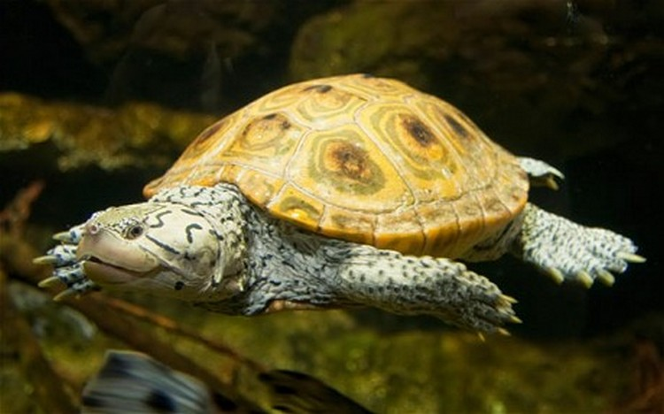
在BOTAKANAN，位於怡保西南遠大約40公里處。有一個河龜生育中心，專門培養繁殖稱為TUNTUNG的河龜。 這座培養中心是由霹靂州野生動物局和國家公園聯合於1967年創立的，目的是為保存水龜品種。 該中心的孵卵處到目前為止，已經釋放成千上萬的小烏龜到霹靂河中。每年的11月到3月，遊客還能在此觀賞河龜遷泳到上產卵的活浩蕩蕩隊伍之獨特景觀。 這裡還提供住宿設備，給那些願意多逗留幾天的旅客。
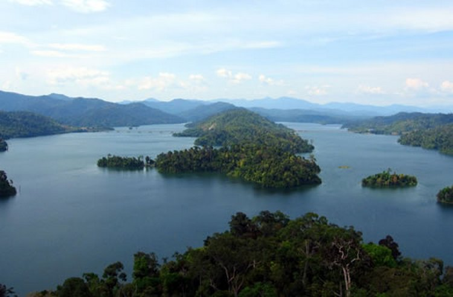
天孟莪湖位於霹靂的東北部，從宜力出發大約需時45分鐘。它剛好介於東西大道的中間。 湖面的範圍約有一萬五千兩百公頃。 天孟莪湖是垂釣者的最愛。這座湖富有許多魚類，如:鯉魚、鯰魚等。 BANDlNG島在天孟莪湖附近，是一座寧靜的戶外活動場所，BANDlNG島度假屋及一些渡假小屋，為旅客提供住宿服務。
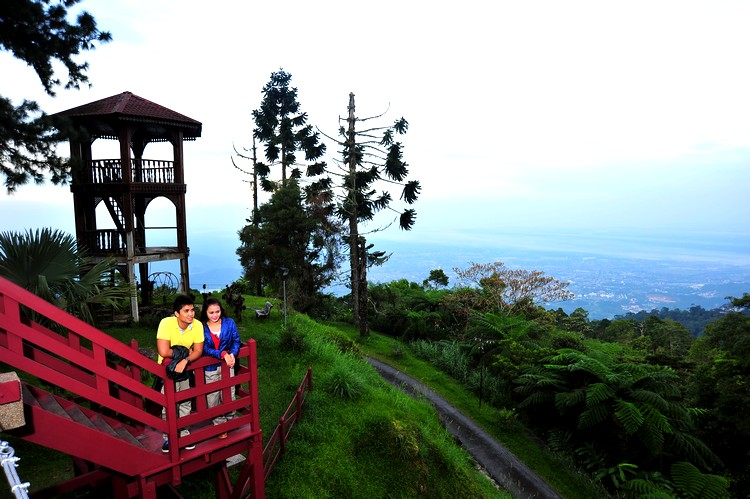 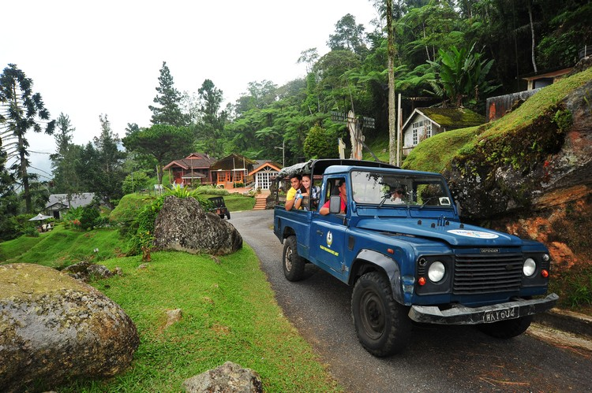 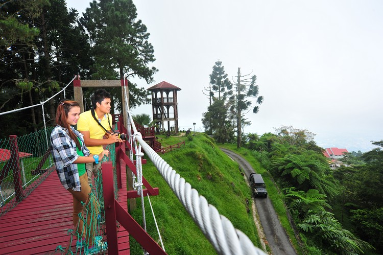
又稱為太平山、麥斯威爾山，是馬來西亞最早期的渡假高原，它有1035公尺高。這裡原先是種植茶葉的，在高峰上，可以鳥瞰馬來西亞半島的西海岸線。晴空萬里時，您將可以看到遠處的邦咯島。 在山上有很舒適的拉律渡假屋及幾間別墅，提供旅客短期留宿之便。山腳下有一輛多用途越野車，提供從早上7時至下午6時，每小時間隔的載客上山及下山的服務。通往太平山的沿路上，會經過一座緬甸泳池，那是馬來西亞最早的游泳池。
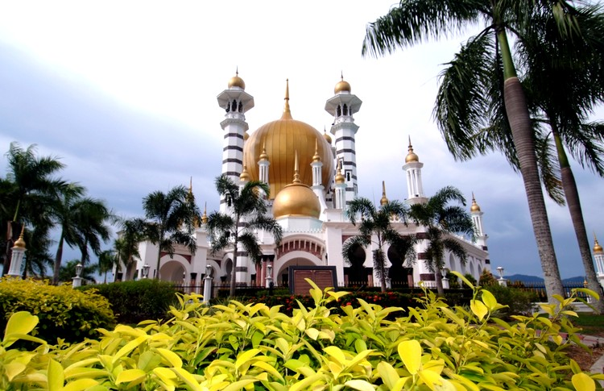 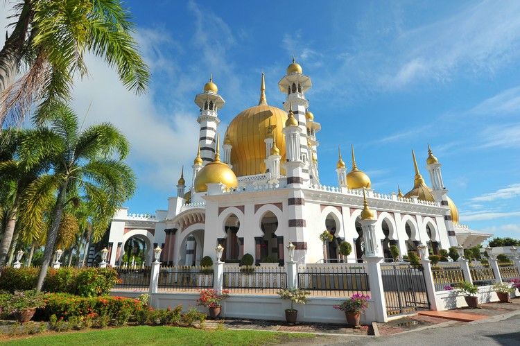 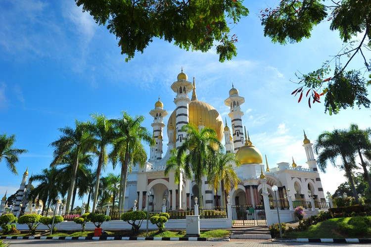
江沙的最高榮耀，是位於武吉贊旦的烏布廸亞清真寺。象徵著官方宗教的地位，這座州回教堂算的上是建築經典之作，她是座擁有38公尺高圓頂的輝煌建築。 這座烏布廸亞清真寺建於19世紀及20世紀之交。這座清真寺可以說是馬來西亞境內最漂亮的清真寺之一，在其巨大的黃金圓頂及尖塔上有著很豐富的回教建築手工及色彩。 這座清真寺最早是由霹靂州第28任蘇丹SULTANIDRIS MURSHIDUL ADZAM SHAHI所建，但是後來數度被迫中斷建築工程。第一次世界大戰時，其義大利進口的大理石，兩次遭受大象的破壞。清真寺於1917年，正式啟用。
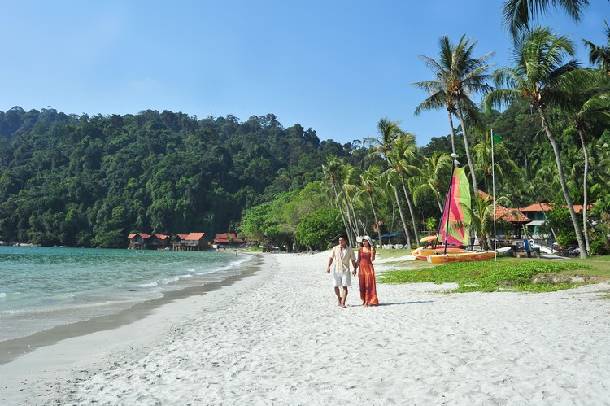 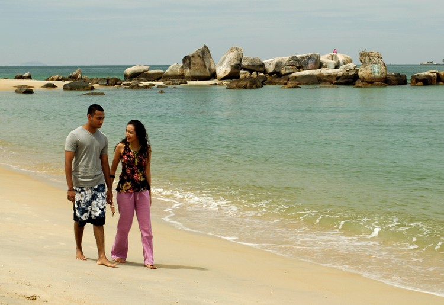 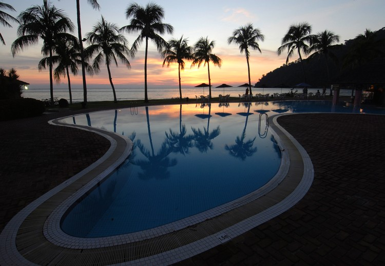 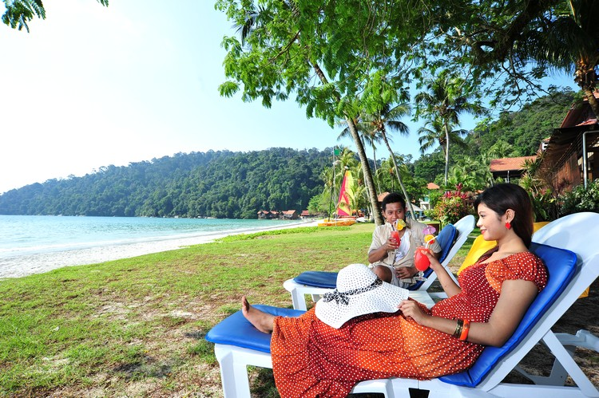
跨過曼絨海峽，紅土坎的對岸，有一座繁忙的漁村小島，叫作邦咯島，它是九座小島組成的島群之中，最大的一座島。邦咯島是一個集捕魚及度假勝地於一身的小島，它是旅遊度假的好去處。 它呈現給遊客們難得的好機會，親身接觸樸實的漁民及他們的生活起居，或可以在此盡情享受完美無暇的海灘及度假的便利設施。這些漁民們散居在島的東邊，面向紅土坎及TELUKBATIK的方向。 遊客從紅土坎乘搭40分鐘的渡輪前往邦咯島時，在抵達之前，渡輪會在主要的居住點稍作停留，這些地點包括：SUNGAI PINANG KECIL 及SUNGAI PINANG BESAR。 邦咯島上有兩個著名的海灘，即PASIRBOGAK及TELUKNIPAH。這裡為旅客提供許多海上活動如:潛水、滑浪及釣魚等。 PASIRBOGAK已經發展得相當完善，而TELUKNlPAH則還保留著鄉村的環境氛圍。島上備有各等級的住宿設備，遊客還可以租用小貨車或摩哆車(機車)，進行環島遊的活動。 島上的每一個定點都有餐館，在邦咯鎮上就有好幾家非常不錯的海鮮餐館。
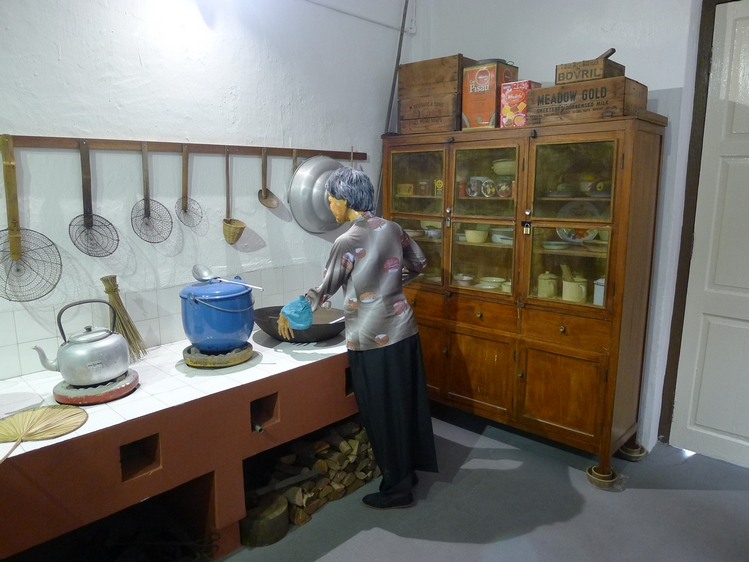 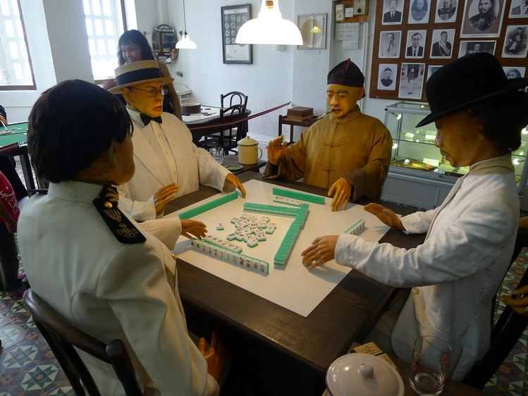 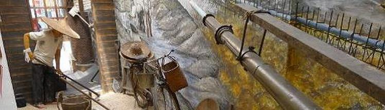

全新開放的私營博物館閒真別墅，透過追溯錫礦這一過去重要產業的歷史，將馬來半島曾經經歷的偉大變革呈現給世人。 閒真別墅是一家客家錫礦工人俱樂部，成立於1893年。結束了一天的辛苦勞作，錫礦工人可以到這裡來休閒娛樂，如果成為俱樂部的成員，還可以享受鴉片和賭博的優待。 如今，這座歷史建築展出許多百年以上的手工錫製品，讓往日的光輝得以重現。 找一個清新的午後，造訪博物館去欣賞眾多精美絕倫的錫手工藝品，你會對馬來西亞半島往日繁盛的錫礦時代，和當時的民生苦樂有更深刻的瞭解。